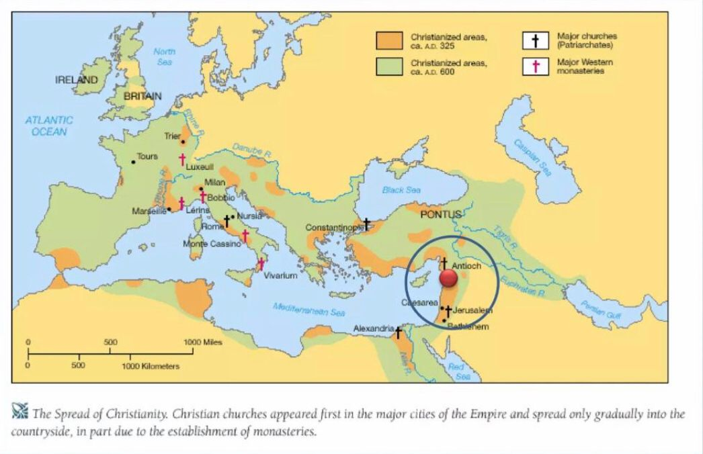

Introdução ao Cristianismo: O cristianismo é a maior religião do mundo. É uma religião abraâmica fundamentada nos ensinamentos de Jesus Cristo que se destaca pela crença na sua morte e ressurreição como a redenção da humanidade. Suas crenças centrais incluem a fé na Santíssima Trindade, na divindade de Jesus e na salvação pela graça. Com diversas ramificações, como o catolicismo romano, o protestantismo e a ortodoxia, o cristianismo originou-se na Palestina no século I, espalhando-se rapidamente pelo Império Romano e tornando-se uma das principais religiões do mundo.
Onde surgiu o Cristianismo: O cristianismo surgiu na região da Judeia, que era parte do Império Romano, no século 1 d.C. O movimento começou com os ensinamentos e a vida de Jesus de Nazaré, cuja mensagem foi continuada por seus discípulos e seguidores. Inicialmente, o cristianismo era um movimento dentro do judaísmo, mas rapidamente se expandiu e se espalhou pelo Império Romano e o mundo inteiro, com a verdade absoluta.
Sobre o cristão: O cristão é caracterizado, por viver de forma semelhante à de Cristo. É preciso estar atento às características de um verdadeiro cristão. A bíblia diz que se estamos em Cristo, somos uma nova criatura, as coisas velhas passaram e tudo se fez novo (2 Coríntios 5:17).“Acautelai-vos, porém, dos falsos profetas, que vêm até vós vestidos como ovelhas, mas, interiormente, são lobos devoradores.Por seus frutos os conhecereis. Porventura colhem-se uvas dos espinheiros, ou figos dos abrolhos?Assim, toda a árvore boa produz bons frutos, e toda a árvore má produz frutos maus.Não pode a árvore boa dar maus frutos; nem a árvore má dar frutos bons.Toda a árvore que não dá bom fruto corta-se e lança-se no fogo.Portanto, pelos seus frutos os conhecereis.Nem todo o que me diz: Senhor, Senhor! entrará no reino dos céus, mas aquele que faz a vontade de meu Pai, que está nos céus.Muitos me dirão naquele dia: Senhor, Senhor, não profetizamos nós em teu nome? e em teu nome não expulsamos demônios? em teu nome não fizemos muitas maravilhas. E então lhes direi abertamente: Nunca vos conheci; apartai-vos de mim, vós que praticais a iniquidade.” Mateus 7: de 15 a 23. Hoje em nossas igrejas, existe um grande número de pessoas que se dizem cristãs, mas suas praticas não condizem com aquilo que professam.
